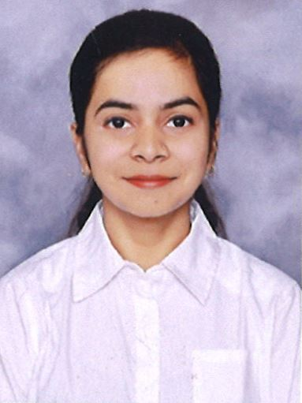

Saumya

Career Objective
Seek a software engineer position in a reputable organization to utilize technical skills, contribute to software development, and continually learn and grow professionally.
Education
- Bachelor of Technology
NIT Jalandhar (2019 - 2023)
CGPA: 7.84/10
- High School
Shivalik Public School Nawanshahr (2016-2018)
Percent: 89.6
Work Experience
- Tata Consultancy Services
Role: Systems Engineer
DOJ: September 5th, 2023
Location: Chennai
- Working as DevOps Engineer, focusing on Azure Services, Managed incidents, created Kibana dashboards, and automated tasks with shell scripts, Execbeat, and Filebeat
- Alerting and Monitoring: Developed Watcher codes for proactive monitoring and alerting using ELK (Elasticsearch Logstash Kibana).
- Ensured efficient log management with Logstash configurations.
Skills
- Java
- Object Oriented Programming
- HTML
- Azure
- Elk Stack
Certifications